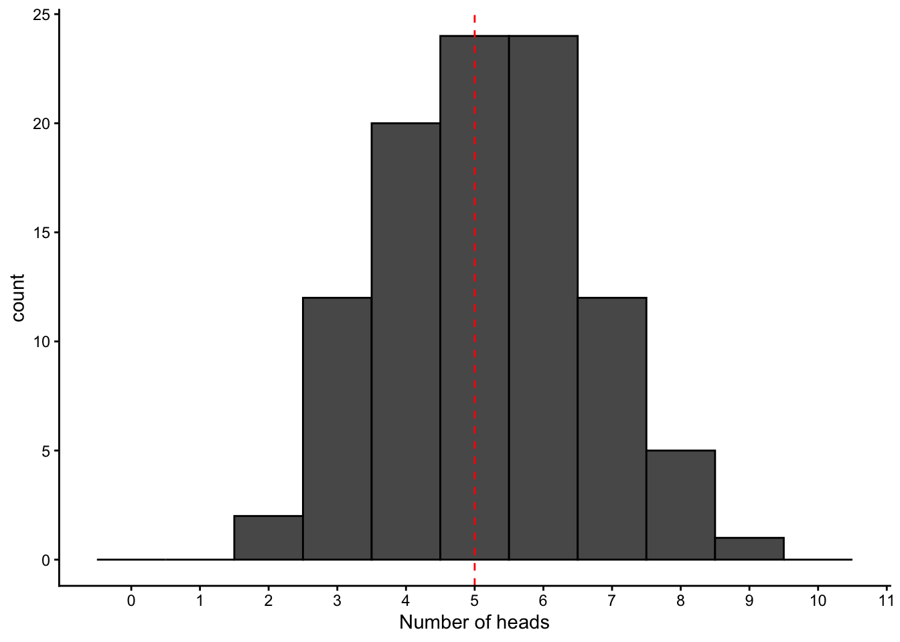
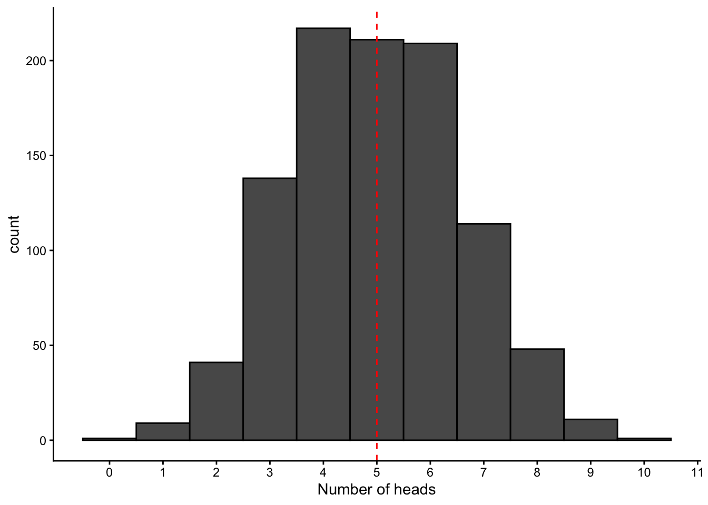
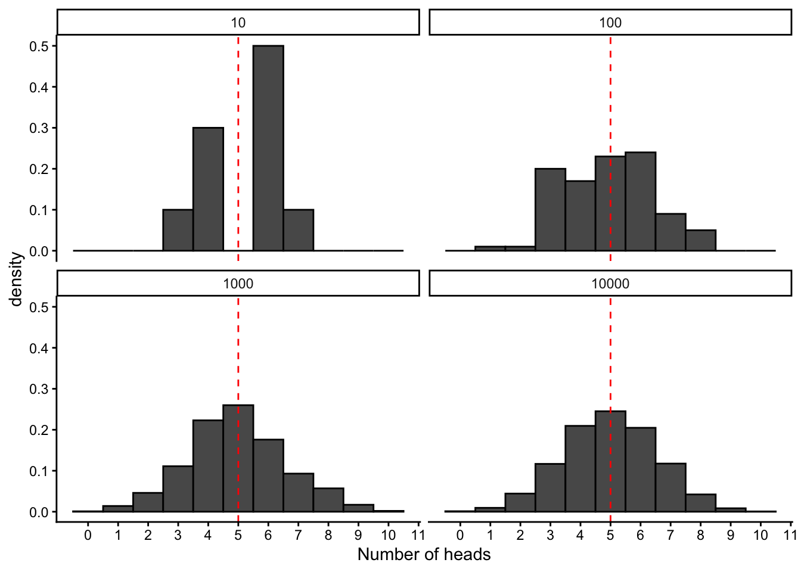
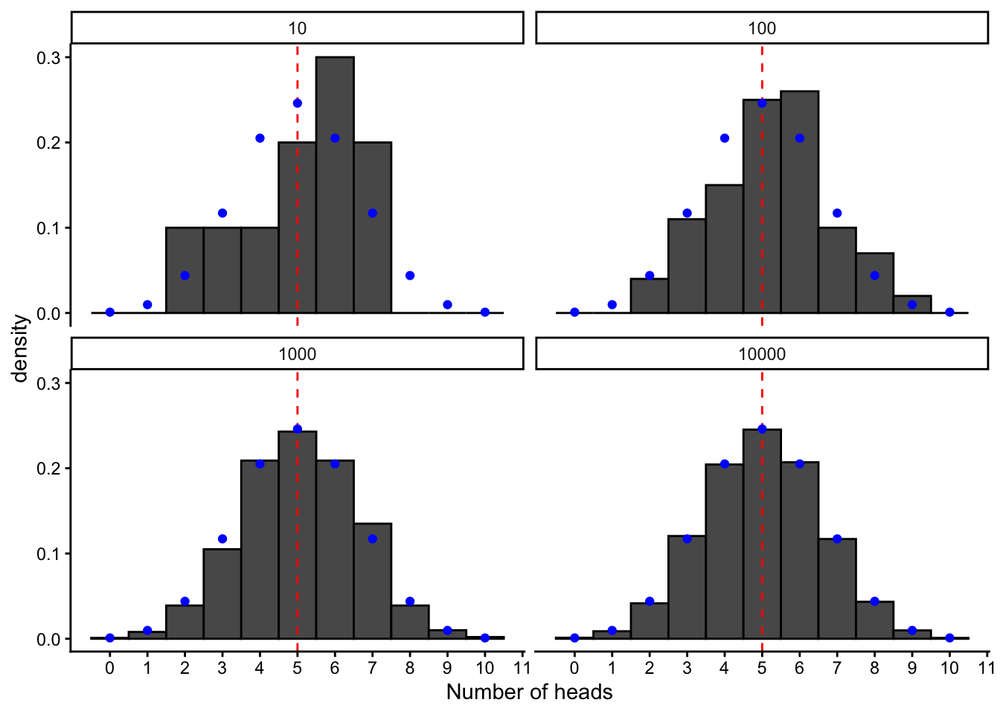
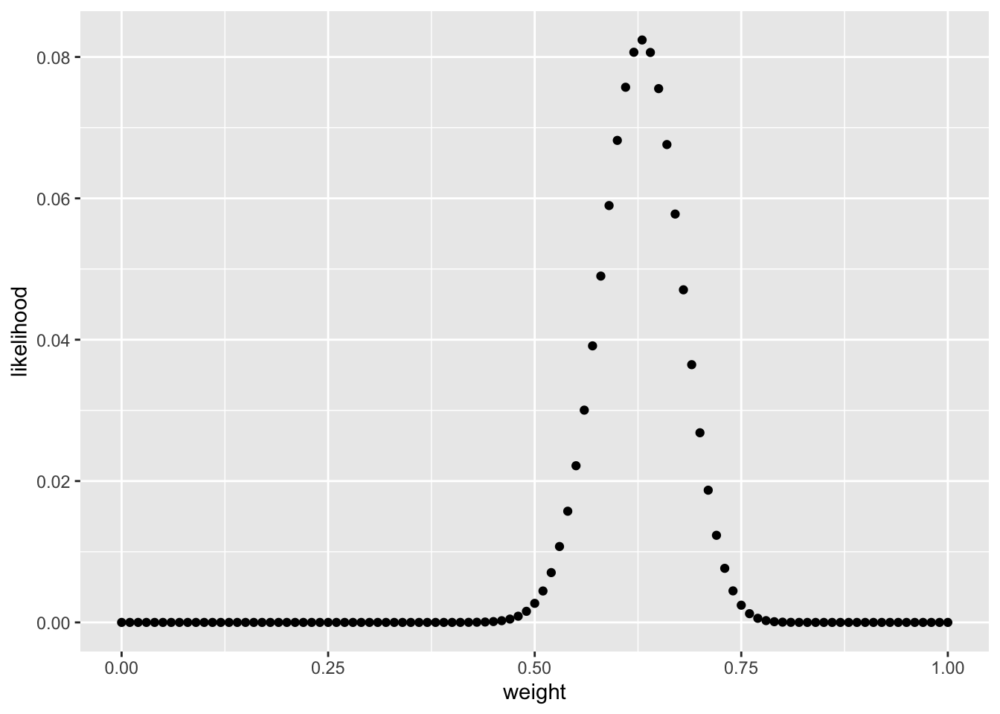

library(tidyverse)7 Random variables and computational statistics
7.1 Lesson preamble
7.1.1 Learning Objectives
- Understand how the concept of random samples forms the foundation of statistical inference
- Draw random numbers using
sample,rbinom, and other distributions- Calculate statistics on random samples
- Conduct simple hypothesis tests
- Do simple maximum likelihood estimation
7.2 Introduction: Probability, random variables, sampling, and statistical inference
In this lecture we’re going to introduce the concept of random variables and techniques for simulating random processes in R. This will serve as a foundation for two future topics we’ll cover in this class:
- Simulating stochastic mathematical models: Many important biological processes that we want to understand and predict are random, and we must include the probabilistic nature of their outcomes in order to accurately describe them. Some examples include the processes of mutation and recombination during cell division, the changes in the frequency of genes in a population, and the fluctuations over time in the size of small populations. We will get to mathematical models later in the course
- Conducting statistical inference: “Statistical inference” means taking observed data and trying to estimating an underlying trend, infer the properties of an entire population from a small sample, or more formally, estimating the parameters of a model that best describe the process that generated the data. We are doing statistical inference whenever we report the slope of a regression line or the prevalence of a trait in a population. All statistical inference starts by thinking about the (random) process through which the observed sample data were generated from the larger underlying population. This is the topic we will move directly into during this lecture and continue with for the next few classes.
You have learned the basic concepts of probability, random variables, and statistical inference in earlier courses. However, you most likely studied the probability of outcomes in thought experiments, and used mathematical formulas that have been derived to give approximate values for inference. In this class, we hope to help you gain a little more intuition for random processes and the philosophy behind statistical inference by using computational methods to generate and analyze random samples.
7.3 Sampling random variables
Let’s think about the simplest possible experiment we can think of where the outcome is random: the flip of a coin. For now, we’ll assume we’re talking about a perfectly unweighted coin - one that is identical on both sides and so has equal probability of landing on either heads or tails.
We can use the built-in sample function in R to simulate random coin flips. We give sample the possible outcomes, the probability of each, and the number of simulations we want it to run for us:
sample(x = c("heads", "tails"), prob = c(0.5, 0.5), size = 1)[1] "tails"Note that in cases where we want the probability of each outcome to be the same, we can omit the prob argument.
Let’s see what happens when we repeat this multiple times:
print(sample(c("heads", "tails"), size = 1))[1] "heads"print(sample(c("heads", "tails"), size = 1))[1] "tails"print(sample(c("heads", "tails"), size = 1))[1] "tails"Unlike any other calculation we’ve every done in R, every time we run this we can get something different! Just like a real-life coin flip.
Suppose we wanted to simulate the outcome of flipping a coin twice: we can simply update the size argument.
sample(c("heads", "tails"), size = 2, replace = TRUE)[1] "tails" "heads"Note that we’ve set replace = TRUE, which means that when the first sample is drawn from the set of options (“heads”, “tails”), it is not “removed” from the options available when the second number is chosen. There are other situations when we might be taking a random sample from a set and want replace = FALSE. For example, if we’re randomly choosing the batting order for a baseball team or if we’re choosing in which order to visit a set of locations to collect data.
7.3.1 Challenge
Using the sample function, simulate the following:
rolling a standard six-sided dice 10 times
choose a random order in which to visit the countries of Thailand, Cambodia, and Vietnam on your next trip
the distribution of males and females in a sample of size 10, when the sex ratio in the population is known to be 1.5 males: 1 female
sample(x = 1:6, size = 10, replace = TRUE) [1] 6 5 5 4 1 5 5 5 3 1sample(x = c("Thailand","Cambodia", "Vietnam"), size = 3, replace = FALSE)[1] "Thailand" "Vietnam" "Cambodia"table(sample(x = c("males","females"), prob = c(0.6,0.4), size = 10, replace = TRUE))
females males
3 7 7.4 Drawing repeated samples from probability distributions
Now let’s think about if we wanted to simulate even more coin flips … like 10, or 100, or 1000! We can certainly do this with the same method:
coin_flip <- sample(c("heads", "tails"), size = 100, replace = TRUE)
print(coin_flip) [1] "heads" "heads" "heads" "tails" "tails" "heads" "tails" "tails" "tails"
[10] "heads" "tails" "tails" "tails" "tails" "tails" "tails" "tails" "heads"
[19] "tails" "tails" "heads" "heads" "heads" "tails" "heads" "tails" "heads"
[28] "heads" "tails" "heads" "tails" "heads" "heads" "tails" "heads" "tails"
[37] "tails" "tails" "heads" "tails" "tails" "heads" "heads" "tails" "heads"
[46] "tails" "heads" "tails" "heads" "tails" "tails" "heads" "heads" "heads"
[55] "tails" "heads" "heads" "heads" "heads" "heads" "tails" "heads" "heads"
[64] "tails" "tails" "tails" "heads" "tails" "heads" "tails" "heads" "heads"
[73] "heads" "heads" "tails" "tails" "tails" "tails" "heads" "tails" "heads"
[82] "heads" "tails" "heads" "tails" "heads" "tails" "heads" "heads" "heads"
[91] "heads" "heads" "heads" "heads" "tails" "heads" "heads" "tails" "heads"
[100] "tails"table(coin_flip)coin_flip
heads tails
53 47 And we can calculate some statistics based on these outcomes, like “what proportion of times did we get heads?”
sum(coin_flip == "heads")/length(coin_flip)[1] 0.53However, this is not really a very efficient or generalization way of sampling binary outcomes. We probably don’t actually care about the entire ordered sequence of {“heads”, “tails”} outcomes. Most of the time we’re probably only interested in the number of heads vs the number of tails (i.e., the proportion of one vs the other). There is actually a way we can sample this result directly!
To do so, we need a quick refresher on the formal names statisticians give to the probability distributions that result from some of the most common random experiments that scientists like to think about. A probability distribution is simply the formal mathematical description of the set of possible outcomes of a random process and each of their probabilities. A coin flip is an example of a Bernoulli trial - any random experiment that asks a yes/no question or has any other binary outcome. The result of such an experiment is said to follow a Bernoulli distribution. It’s a bit more general than the coin flip, as the probability of a “yes” outcome or a “success” (e.g., a heads) doesn’t need to be 0.5 but can be any number between 0 and 1.
The outcome of multiple Bernoulli trials (i.e., repeated coin flips) can be described by a binomial distribution, which gives the probability of getting a certain number of “successes” (i.e., heads) after doing a certain number of iterations (i.e., coin flips). So, to generate a random number describing the number of heads we land after flipping a coin 100 times, we can use the function rbinom() (the random number generator for the binomial distribution):
rbinom(n = 1, size = 100, prob = 0.5)[1] 46# n: how many times to repeat all the trials
# size: how many trials to do
# prob: chance of success in each trialRun this cell a few more times, and see that you get a different answer each time.
Now, let’s set up a loop to repeat this 10-flip experiment 100 times, and make a plot to see how much the outcomes vary
binom_samples <- rbinom(n = 100, size = 10, prob = 0.5)
binom_samples [1] 5 6 3 6 6 5 6 5 4 6 4 5 6 3 4 5 6 3 6 7 1 3 6 7 6 3 8 3 7 3 5 5 4 8 5 7 5
[38] 3 4 5 6 5 4 8 5 6 4 6 7 4 5 6 4 3 6 8 4 3 4 4 6 7 5 3 7 4 4 3 3 5 6 2 6 5
[75] 5 1 6 5 3 5 8 5 4 3 2 5 5 6 6 6 5 7 6 5 3 5 8 6 3 5mean(binom_samples)[1] 4.95data.frame(value = binom_samples) %>% ggplot(aes(x = value)) +
geom_histogram(binwidth = 1, center = 0, color = "black") +
geom_vline(aes(xintercept = 5),linetype = "dashed", color = "red") +
scale_x_continuous(breaks = 0:11, limits = c(-0.5,10.5)) +
labs(x = "Number of heads") +
theme_classic()
7.4.1 Challenge question
- Regenerate this histogram but assuming 1000 trials were done. What do you notice about the change in the graph?
- Imagine you flipped a coin 10 times and 8 of these times you got heads. Your friend insists this result means that the coin you are using must be biased towards heads or that you are controlling the flip to preferentially land on heads. What would you say in response to this? How could you quantify this argument? (Hint: How can you quantify exactly how likely an outcome this extreme would be with an unweighted coin?)
binom_samples_more <- rbinom(n = 1000, size = 10, prob = 0.5)
data.frame(value = binom_samples_more) %>% ggplot(aes(x = value)) +
geom_histogram(binwidth = 1, center = 0, color = "black") +
geom_vline(aes(xintercept = 5),linetype = "dashed", color = "red") +
scale_x_continuous(breaks = 0:11, limits = c(-0.5,10.5)) +
labs(x = "Number of heads") +
theme_classic()
sum(binom_samples_more == 8)/length(binom_samples_more)[1] 0.048# In the above sample of 1000 repeats of 10 flips each, we see that about 5% of the time we get 8 heads. This is rare, but not THAT rareprop.table(table(binom_samples_more))binom_samples_more
0 1 2 3 4 5 6 7 8 9
0.001 0.007 0.047 0.110 0.214 0.246 0.200 0.121 0.048 0.006 # In the above sample of 1000 repeats of 10 flips each, we see that about 6% of the time we get 8 or more heads. This is rare, but not THAT rare7.5 Probability distributions
Let’s make a plot to explicitly see how our distribution of outcomes changes as we do more and more trials:
(make facet plot with different trial sizes and a few iterations of each?)
binom_samples_10 <- rbinom(n = 10, size = 10, prob = 0.5)
binom_samples_100 <- rbinom(n = 100, size = 10, prob = 0.5)
binom_samples_1000 <- rbinom(n = 1000, size = 10, prob = 0.5)
binom_samples_10000 <- rbinom(n = 10000, size = 10, prob = 0.5)
binom.df <- data.frame(value = binom_samples_10, sample_size = 10) %>%
rbind(data.frame(value = binom_samples_100, sample_size = 100)) %>%
rbind(data.frame(value = binom_samples_1000, sample_size = 1000)) %>%
rbind(data.frame(value = binom_samples_10000, sample_size = 10000))
plot.binom <- binom.df %>%
ggplot(aes(x = value)) +
geom_histogram(binwidth = 1, center = 0, color = "black",aes(y = after_stat(density))) +
geom_vline(aes(xintercept = 5),linetype = "dashed", color = "red") +
scale_x_continuous(breaks = 0:11, limits = c(-0.5,10.5)) +
labs(x = "Number of heads") +
theme_classic() +
facet_wrap(~sample_size)
plot.binom
We see that as we do more and more trials, the distribution of our outcomes becomes more predictable, smoother, and more clearly centered around the mean value. In fact, in this case, it actually converges to a well-characterized shape that can be described with a simple mathematical formula, and is know as the binomial distribution.
The binomial distribution is an example of a probability mass function, which exists for every random process that generates a set of discrete values, and formally describes the probability of getting each possible outcome value \(X\), :
\[\Pr(X=k) = p_k \hspace{12pt} (\text{e.g. } p_k = 1/6 \text{ for all } k \text{ when a die is fair})\]
The probability mass function for the binomial distribution is
\[\Pr(X=x) = f(x|N,p) = {N \choose x} (1-p)^{N-x} p^x.\]
where \(N\) is the number of trials, \(p\) is the probability of success in each trial, and \(x\) is the observed number of successes.
Probability mass functions must satisfy a few criteria:
the probability of each outcome must be between 0 and 1
the probability of all outcomes must sum to 1
Note that for any random/stochastic process, the PMF always exists, though it might not always have a nice mathematical representation. For random processes that generate continuous random variables (e.g., choosing any number between 0 and 1, or sampling from a normal distribution), the name for the probability distribution is instead the probability density function (“PDF”). We’ll get to examples of continuous random variables later.
Here we can plot it along with our simulated distributions, by using the built-in R function for the binomial probability distribution (dbinom) :
binom.pmf <- data.frame(x = 0:10, freq = dbinom(x = 0:10, size = 10, prob = 0.5))
plot.binom +
geom_point(data = binom.pmf, aes(x=x, y = freq), color = "blue")
The probability distribution is useful because it allows us to directly calculate the long-term probability of a given outcome, without simulation. For example, if we were to keep repeating our experiment of flipping a coin 10 times and counting up the heads, what would be the proportion of times we landed 8 heads? Using the built-in function for the probability distribution for the binomial, dbinom :
dbinom(x = 8, size = 10, prob = 0.5)[1] 0.04394531which is very similar to the value of 0.049 we estimated before from 1000 simulations!
7.6 Hypothesis testing
With the simple tools we have now and using the binomial distribution, we can already show how we can do formal statistical inference just using simulations.
Suppose we want to conduct an experiment to test if our coin is unweighted (vs biased towards one side or the other). Formally, we want to test the null hypothesis that the probability of heads is 50% (vs an alternative hypothesis that the coin is biased towards heads). To do this, we conduct an experiment where we flip our coin 100 times. Let’s imagine that the result of this experiment is that we get 66 heads. This is our data.
Testing the null hypothesis means we have to ask, “How likely would I be to observe an outcome like my data if the null hypothesis were true?”, or more specifically, “How likely would I be to observe 66 heads out of 100 coin flips for an unweighted coin”?. If our observed data is very unlikely under the null hypothesis, then we would reject it, and say it doesn’t explain the data well.
Before we calculate anything, we should decide what we mean by “very unlikely”. Less than 10% of the time? Less than 1%? Less than 0.00001%? This level of critical “unlikeliness” is called the significance level, and is usually referred to with the symbol \(\alpha\). For (somewhat arbitrary) historical reasons, a value of \(\alpha\) = 0.05 (5%) is typically used, meaning that we reject a null hypothesis if the likelihood of generating data like ours if that hypothesis were true would be less than 5%.
Now that we have our cut-off level of “unlikeliness” defined, we have to calculate how likely our observed data is under the null hypothesis. This will be our p value! We can do this in two ways. Since we have a probability mass function for the random process that describes how this data was generated, we can simply calculate the probability
dbinom(x = 66, size = 100, prob = 0.5)[1] 0.0004581053This means that under the null hypothesis that the coin is unweighted, there’s about a 0.045% chance of getting exactly 66 heads out of 100 flips. However, note that for hypothesis testing we don’t typically want to look at just the probability of getting exactly our observed result. We want to look at getting a results at least as extreme as our observed result, since any such result would provide evidence against the null hypothesis.
For the binomial distribution, we can calculate the probability of getting a value of 66 or higher by using the cumulative distribution function for the binomial. The cumulative distribution functions tell us the probability of getting the value \(X\) or lower, so instead we have to find the probability of an outcome of 65 or lower and then subtract this from one to get the remainder:
# pbinom(q = 66, size=100, prob=0.5) # probability of 66 or lower
# pbinom(q = 65, size=100, prob=0.5) # probability of 65 or lower
1- pbinom(q = 65, size=100, prob=0.5) # probability of over 65, ie prob of 66 or higher[1] 0.0008949652Under the null hypothesis that the coin is unweighted, there’s about a 0.09% chance of getting at least 66 heads out of 100 flips, so p = 0.0009 for this test. Since we’ve already defined out significance level as 5%, we would say we have sufficient evidence to reject the null hypothesis that the coin is unweighted, and instead we can conclude that there is statistically-significant evidence that the coin is weighted.
Note that even if we didn’t know the mathematical formula for the probability mass function, we wouldn’t be out of luck! As long as we can simulate the process, we can still estimate the p value. Let’s simulate our exact experiment, but under the null hypothesis, and lets do this many times. So, let’s flip an unweighted coin 100 times, record the results, and repeat this 100,000 times. Then let’s calculate what % of the time we got at least 66
n_trials = 10^5
binom.null <- rbinom(n = n_trials, size = 100, prob = 0.5)
sum(binom.null >=66)/n_trials[1] 0.00095Now we have again have p = 0.0009!
This process of simulating data under the null hypothesis - instead of using a known formula to calculate a test statistic - is extremely useful for when we consider data that is generated by more complex random processes or models. The downside is that it can be slow, as you often have to do a lot of trials to get an accurate estimate, especially when p is small. As a rule of thumb, you want to make sure that there were at least 10 occurrances of the events that form the numerator of the p value calculation (in this case, sets of flips that gave at least 66 heads).
7.6.1 Challenge
Now that we feel confident rejecting the null hypothesis of an unweighted coin, let’s say we wanted to test a different hypothesis - for example, that instead of choosing the unweighted coin, we picked one up that had a 70% probability of giving heads. Under this new hypothesis, what is the p value? (ie, the probability of observing at least 66 heads)
1- pbinom(q = 65, size=100, prob=0.7) # probability of over 65, ie prob of 66 or higher[1] 0.8371417# We would say "with our observed data (66/100 heads) we fail to reject the null hypothesis that our coin is weighted 70% towards heads, with a p value of 0.83 (vs a significance level of 0.05)"7.7 Maximum likelihood estimation
Finally, let’s say we wanted to go beyond simply testing a few different hypothesis, and would instead like to estimate exactly how biased our coin is. More precisely, if we define a coin by it’s propensity to give heads, and call this parameter w, can we estimate the w value that is most likely, given our observed data?
We can use a very similar idea! For any proposed coin weight, we can calculate how likely we would be to observe the data that we did. We can repeat this for all possible coin weights, and then report the one that gives the maximum likelihood of our observed data! Let’s try it
7.7.1 Challenge
- Write a function that takes in the observed number of heads (
heads_observed) for a given number of coin flips (n_flips), along with a potential propensity for the coin to give heads (weight), and return now likely the observed data would be under that coin weight. Test it for a coin weight of 0.7
likelihood_vs_coin_weight <- function(heads_observed, n_flips, weight){
dbinom(x = heads_observed, size = n_flips, prob = weight)
}
likelihood_vs_coin_weight(63, 100, 0.7)[1] 0.02683446- Use this function to consider a range of weights between 0 and 1 and generate a data frame with the columns
weightsandlikelihood. and plot the likelihood of the data vs the true coin weight. What is the most likely coin weight?
heads_observed <- 63
n_flips <- 100
test_weights <- seq(0,1,0.01)
lik.df <- data.frame(weight = test_weights, likelihood = likelihood_vs_coin_weight(heads_observed, n_flips, test_weights))
lik.df %>%
ggplot(aes(x = weight, y = likelihood)) +
geom_point() +
labs(x = "Coin weight (prob. of heads)")
#max
lik.df %>% filter(likelihood == max(likelihood)) weight likelihood
1 0.63 0.08240399When you complete this, you will have just done your first maximum likelihood estimation!
Let’s review the idea of likelihood! We have a set of data points \(x_1,x_2,\dots,x_n\) that we assume were generated by a random process with probability distribution \(f(x|\theta)\), where \(\theta\) is one or more parameters of that distribution. Our goal is to to estimate \(\theta\), i.e., to determine what value of the parameters were mostly likely to have given rise to the data. We do this by maximizing the likelihood function
\[L(x_1,\dots,x_n|\theta) = f(x_1|\theta) \cdots f(x_n|\theta) = \prod_{i=1}^n f(x_i|\theta),\]
which is formed under the assumption \(x_1,\dots,x_n\) are independent. Note that for our example with the coin flip, we just had a single data point (\(x_1 = 66\)), and the binomial distribution just has one unknown parameter, the coin weight \(w\).
A couple things to notice:
- The likelihood is formed by simply plugging in the data into the probability distribution function from which they jointly arose. (When the data are independent, the joint probability distribution function is the product of the individual distribution functions.)
- This formulation of the likelihood is agnostic to whether or not the observations are discrete or continuous — regardless, the distribution of the data is denoted \(f(\cdot|\theta)\)!
- The likelihood function is a function of the parameters \(\theta\), but NOT of the data. This is because the data has already been collected and is, thus, fixed.
- Amazingly, the likelihood contains all of the information in the data about the parameters.
- Viewed as a function of \(\theta\), the likelihood tells us how likely each set of parameter values is to have given rise to the data, given the data. (The \(|\) symbol means given…)
Most importantly, the value(s) of parameter(s) \(\theta\) which jointly maximize \(L\) (i.e., have the highest likelihood of generating the observed data) is called the maximum likelihood estimator. It is often denoted \(\hat{\theta}_{\text{MLE}}\), and is our best guess for the parameter(s) which generated the data.